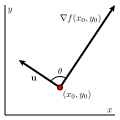
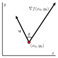
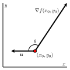

Section10.6Directional Derivatives and the Gradient
Motivating Questions
The partial derivatives of a function \(f\) tell us the rate of change of \(f\) in the direction of the coordinate axes. How can we measure the rate of change of \(f\) in other directions?
What is the gradient of a function and what does it tell us?
The partial derivatives of a function tell us the instantaneous rate at which the function changes as we hold all but one independent variable constant and allow the remaining independent variable to change. It is natural to wonder how we can measure the rate at which a function changes in directions other than parallel to a coordinate axes. In what follows, we investigate this question, and see how the rate of change in any given direction is connected to the rates of change given by the standard partial derivatives.
and suppose that \(f\) measures the temperature, in degrees Celsius, at a given point in the plane, where \(x\) and \(y\) are measured in feet. Assume that the positive \(x\)-axis points due east, while the positive \(y\)-axis points due north. A contour plot of \(f\) is shown in Figure10.6.1
Figure10.6.1.A contour plot of \(f(x,y) = 30-x^2-\frac12 y^2\text{.}\)
Suppose that a person is walking due east, and thus parallel to the \(x\)-axis. At what instantaneous rate is the temperature changing with respect to \(x\) at the moment the walker passes the point \((2,1)\text{?}\) What are the units on this rate of change?
Next, determine the instantaneous rate of change of temperature with respect to distance at the point \((2,1)\) if the person is instead walking due north. Again, include units on your result.
Now, rather than walking due east or due north, lets suppose that the person is walking with velocity given by the vector \(\vv = \langle 3, 4 \rangle\text{,}\) where time is measured in seconds. Note that the persons speed is thus \(| \vv | = 5\) feet per second. Find parametric equations for the persons path; that is, parameterize the line through \((2,1)\) using the direction vector \(\vv = \langle 3, 4 \rangle\text{.}\) Let \(x(t)\) denote the \(x\)-coordinate of the line, and \(y(t)\) its \(y\)-coordinate. Make sure your parameterization places the walker at the point \((2,1)\) when \(t=0\text{.}\)
With the parameterization in (c), we can now view the temperature \(f\) as not only a function of \(x\) and \(y\text{,}\) but also of time, \(t\text{.}\) Hence, use the chain rule to determine the value of \(\frac{df}{dt}\bigm|_{t=0}\text{.}\) What are the units on your answer? What is the practical meaning of this result?
Subsection10.6.1Directional Derivatives
Given a function \(z = f(x,y)\text{,}\) the partial derivative \(f_x(x_0,y_0)\) measures the instantaneous rate of change of \(f\) as only the \(x\) variable changes; likewise, \(f_y(x_0,y_0)\) measures the rate of change of \(f\) at \((x_0,y_0)\) as only \(y\) changes. Note particularly that \(f_x(x_0,y_0)\) is measured in units of \(f\) per unit of change in \(x\text{,}\) and that the units on \(f_y(x_0,y_0)\) are similar.
In Preview Activity10.6.1, we saw how we could measure the rate of change of \(f\) in a situation where both \(x\) and \(y\) were changing; in that activity, however, we found that this rate of change was measured in units of \(f\) per unit of time. In a given unit of time, we may move more than one unit of distance. In fact, in Preview Activity10.6.1, in each unit increase in time we move a distance of \(| \vv | = 5\) feet. To generalize the notion of partial derivatives to any direction of our choice, we instead want to have a rate of change whose units are units of \(f\) per unit of distance in the given direction.
In this light, in order to formally define the derivative in a particular direction of motion, we want to represent the change in \(f\) for a given unit change in the direction of motion. We can represent this unit change in direction with a unit vector, say \(\vu = \langle u_1, u_2 \rangle\text{.}\) If we move a distance \(h\) in the direction of \(\vu\) from a fixed point \((x_0,y_0)\text{,}\) we then arrive at the new point \((x_0+u_1h, y_0+u_2h)\text{.}\) It now follows that the slope of the secant line to the curve on the surface through \((x_0,y_0)\) in the direction of \(\vu\) through the points \((x_0,y_0)\) and \((x_0+u_1h, y_0+u_2h)\) is
To get the instantaneous rate of change of \(f\) in the direction \(\vu = \langle u_1, u_2 \rangle\text{,}\) we must take the limit of the quantity in Equation(10.6.1) as \(h \to 0\text{.}\) Doing so results in the formal definition of the directional derivative.
Definition10.6.2.
Let \(f = f(x,y)\) be given. The derivative of \(f\) at the point \((x,y)\) in the direction of the unit vector \(\vu = \langle u_1, u_2 \rangle\) is denoted \(D_{\vu}f(x,y)\) and is given by
for those values of \(x\) and \(y\) for which the limit exists.
The quantity \(D_{\vu} f(x,y)\) is called a directional derivative. When we evaluate the directional derivative \(D_{\vu} f(x,y)\) at a point \((x_0, y_0)\text{,}\) the result \(D_{\vu} f(x_0,y_0)\) tells us the instantaneous rate at which \(f\) changes at \((x_0, y_0)\) per unit increase in the direction of the vector \(\vu\text{.}\) In addition, the quantity \(D_{\vu} f(x_0,y_0)\) tells us the slope of the line tangent to the surface in the direction of \(\vu\) at the point \((x_0,y_0,f(x_0,y_0))\text{.}\)
Subsection10.6.2Computing the Directional Derivative
In a similar way to how we developed shortcut rules for standard derivatives in single variable calculus, and for partial derivatives in multivariable calculus, we can also find a way to evaluate directional derivatives without resorting to the limit definition found in Equation(10.6.2). We do so using a very similar approach to our work in Preview Activity10.6.1.
Suppose we consider the situation where we are interested in the instantaneous rate of change of \(f\) at a point \((x_0,y_0)\) in the direction \(\vu = \langle u_1, u_2 \rangle\text{,}\) where \(\vu\) is a unit vector. The variables \(x\) and \(y\) are therefore changing according to the parameterization
\begin{equation*}
x = x_0 + u_1t \ \ \ \ \ \text{ and } \ \ \ \ \ y = y_0 + u_2t.
\end{equation*}
Observe that \(\frac{dx}{dt} = u_1\) and \(\frac{dy}{dt} = u_2\) for all values of \(t\text{.}\) Since \(\vu\) is a unit vector, it follows that a point moving along this line moves one unit of distance per one unit of time; that is, each single unit of time corresponds to movement of a single unit of distance in that direction. This observation allows us to use the Chain Rule to calculate the directional derivative, which measures the instantaneous rate of change of \(f\) with respect to change in the direction \(\vu\text{.}\)
Note well: To use Equation (10.6.3), we must have a unit vector \(\vu = \langle u_1, u_2 \rangle\) in the direction of motion. In the event that we have a direction prescribed by a non-unit vector, we must first scale the vector to have length 1.
Activity10.6.2.
Let \(f(x,y) = 3xy-x^2y^3\text{.}\)
Determine \(f_x(x,y)\) and \(f_y(x,y)\text{.}\)
Use Equation(10.6.3) to determine \(D_{\vi} f(x,y)\) and \(D_{\vj} f(x,y)\text{.}\) What familiar function is \(D_{\vi} f\text{?}\) What familiar function is \(D_{\vj} f\text{?}\) (Recall that \(\vi\) is the unit vector in the positive \(x\)-direction and \(\vj\) is the unit vector in the positive \(y\)-direction.)
Use Equation(10.6.3) to find the derivative of \(f\) in the direction of the vector \(\vv = \langle 2, 3 \rangle\) at the point \((1,-1)\text{.}\) Remember that a unit direction vector is needed.
Subsection10.6.3The Gradient
Via the Chain Rule, we have seen that for a given function \(f = f(x,y)\text{,}\) its instantaneous rate of change in the direction of a unit vector \(\vu = \langle u_1, u_2 \rangle\) is given by
we see that we may recast Equation(10.6.4) in a way that has geometric meaning. In particular, we see that \(D_{\vu}f(x_0,y_0)\) is the dot product of the vector \(\left\langle f_x(x_0,y_0), f_y(x_0,y_0) \right\rangle\) and the vector \(\vu\text{.}\)
We call this vector formed by the partial derivatives of \(f\) the gradient of \(f\) and denote it
In the following activity, we investigate some of what the gradient tells us about the behavior of a function \(f\text{.}\)
Activity10.6.3.
Lets consider the function \(f\) defined by \(f(x,y) = x^2 - y^2\text{.}\) Some contours for this function are shown in Figure10.6.3.
Figure10.6.3.Contours of \(f(x,y) = x^2 - y^2\text{.}\)
Find the gradient \(\nabla f (x,y)\text{.}\)
For each of the following points \((x_0,y_0)\text{,}\) evaluate the gradient \(\nabla f(x_0,y_0)\) and sketch the gradient vector with its tail at \((x_0,y_0)\text{.}\) Some of the vectors are too long to fit onto the plot, but wed like to draw them to scale; to do so, scale each vector by a factor of 1/4.
\(\displaystyle (x_0,y_0) = (2,0)\)
\(\displaystyle (x_0,y_0) = (0,2)\)
\(\displaystyle (x_0,y_0) = (2,2)\)
\(\displaystyle (x_0,y_0) = (2,1)\)
\(\displaystyle (x_0,y_0) = (-3,2)\)
\(\displaystyle (x_0,y_0) = (-2,-4)\)
\(\displaystyle (x_0,y_0) = (0,0)\)
What do you notice about the relationship between the gradient at \((x_0,y_0)\) and the contour passing through that point?
Does \(f\) increase or decrease in the direction of \(\nabla
f(x_0,y_0)\text{?}\) Provide a justification for your response.
As a vector, \(\nabla f(x_0,y_0)\) defines a direction and a length. As we will soon see, both of these convey important information about the behavior of \(f\) near \((x_0,y_0)\text{.}\)
Subsection10.6.4The Direction of the Gradient
Remember that the dot product also conveys information about the angle between the two vectors. If \(\theta\) is the angle between \(\nabla
f(x_0,y_0)\) and \(\vu\) (where \(\vu\) is a unit vector), then we also have that
In particular, when \(\theta\) is a right angle, as shown on the left of Figure10.6.4, then \(D_{\vu}f(x_0,y_0) = 0\text{,}\) because \(\cos(\theta) = 0\text{.}\) Since the value of the directional derivative is 0, this means that \(f\) is unchanging in this direction, and hence \(\vu\) must be tangent to the contour of \(f\) that passes through \((x_0,y_0)\text{.}\) In other words, \(\nabla f(x_0,y_0)\) is orthogonal to the contour through \((x_0,y_0)\text{.}\) This shows that the gradient vector at a given point is always perpendicular to the contour passing through the point, confirming that what we saw in part (c) of Activity10.6.3 holds in general.



Figure10.6.4.The sign of \(D_{\vu} f(x_0,y_0)\) is determined by \(\theta\text{.}\)
Moreover, when \(\theta\) is an acute angle, it follows that \(\cos(\theta) > 0\) so since
and therefore \(D_{\vu}f(x_0,y_0) > 0\text{,}\) as shown in the middle image in Figure10.6.4. This means that \(f\) is increasing in any direction where \(\theta\) is acute. In a similar way, when \(\theta\) is an obtuse angle, then \(\cos(\theta) \lt 0\) so \(D_{\vu}f(x_0,y_0) \lt 0\text{,}\) as seen on the right in Figure10.6.4. This means that \(f\) is decreasing in any direction for which \(\theta\) is obtuse.
Finally, as we can see in the following activity, we may also use the gradient to determine the directions in which the function is increasing and decreasing most rapidly.
Activity10.6.4.
In this activity we investigate how the gradient is related to the directions of greatest increase and decrease of a function. Let \(f\) be a differentiable function and \(\vu\) a unit vector.
Let \(\theta\) be the angle between \(\nabla f(x_0,y_0)\) and \(\vu\text{.}\) Use the relationship between the dot product and the angle between two vectors to explain why
At the point \((x_0,y_0)\text{,}\) the only quantity in Equation(10.6.6) that can change is \(\theta\) (which determines the direction \(\vu\) of travel). Explain why \(\theta = 0\) makes the quantity
When \(\theta = 0\text{,}\) in what direction does the unit vector \(\vu\) point relative to \(\nabla f(x_0,y_0)\text{?}\) Why? What does this tell us about the direction of greatest increase of \(f\) at the point \((x_0,y_0)\text{?}\)
In what direction, relative to \(\nabla f(x_0,y_0)\text{,}\) does \(f\) decrease most rapidly at the point \((x_0,y_0)\text{?}\)
State the unit vectors \(\vu\) and \(\vv\) (in terms of \(\nabla f(x_0,y_0)\)) that provide the directions of greatest increase and decrease for the function \(f\) at the point \((x_0,y_0)\text{.}\) What important assumption must we make regarding \(\nabla f(x_0,y_0)\) in order for these vectors to exist?
Subsection10.6.5The Length of the Gradient
Having established in Activity10.6.4 that the direction in which a function increases most rapidly at a point \((x_0,y_0)\) is the unit vector \(\vu\) in the direction of the gradient, (that is, \(\vu = \frac{1}{|\nabla f(x_0,y_0)|} \nabla f(x_0,y_0)\text{,}\) provided that \(\nabla f(x_0,y_0) \ne \vzero\)), it is also natural to ask, in the direction of greatest increase for \(f\) at \((x_0,y_0)\text{,}\) what is the value of the rate of increase? In this situation, we are asking for the value of \(D_{\vu} f(x_0,y_0)\) where \(\vu = \frac{1}{|\nabla f(x_0,y_0)|} \nabla f(x_0,y_0)\text{.}\)
Using the now familiar way to compute the directional derivative, we see that
Next, we recall two important facts about the dot product: (i) \(\vw\cdot (c \vv) = c (\vw \cdot \vv)\) for any scalar \(c\text{,}\) and (ii) \(\vw \cdot \vw = |\vw|^2\text{.}\) Applying these properties to the most recent equation involving the directional derivative, we find that
Finally, since \(\nabla f(x_0,y_0)\) is a nonzero vector, its length \(|\nabla f(x_0,y_0)|\) is a nonzero scalar, and thus we can simplify the preceding equation to establish that
We summarize our most recent work by stating two important facts about the gradient.
Important facts about the gradient.
Let \(f\) be a differentiable function and \((x_0,y_0)\) a point for which \(\nabla f(x_0,y_0) \ne \vzero\text{.}\) Then \(\nabla f(x_0,y_0)\) points in the direction of greatest increase of \(f\) at \((x_0,y_0)\text{,}\) and the instantaneous rate of change of \(f\) in that direction is the length of the gradient vector. That is, if \(\vu = \frac{1}{|\nabla f(x_0,y_0)|} \nabla f(x_0,y_0)\text{,}\) then \(\vu\) is a unit vector in the direction of greatest increase of \(f\) at \((x_0,y_0)\text{,}\) and \(D_{\vu} f(x_0,y_0) = |\nabla f(x_0,y_0)|\text{.}\)
Activity10.6.5.
Consider the function \(f\) defined by \(f(x,y) = -x + 2xy - y\text{.}\)
Find the gradient \(\nabla f(1,2)\) and sketch it on Figure10.6.5.
Figure10.6.5.A plot for the gradient \(\nabla f(1,2)\text{.}\)
Sketch the unit vector \(\vz = \left\langle-\frac1{\sqrt{2}},
-\frac1{\sqrt{2}}\right\rangle\) on Figure10.6.5 with its tail at \((1,2)\text{.}\) Now find the directional derivative \(D_{\vz}f(1,2)\text{.}\)
What is the slope of the graph of \(f\) in the direction \(\vz\text{?}\) What does the sign of the directional derivative tell you?
Consider the vector \(\vv = \langle 2,-1\rangle\) and sketch \(\vv\) on Figure10.6.5 with its tail at \((1,2)\text{.}\) Find a unit vector \(\vw\) pointing in the same direction of \(\vv\text{.}\) Without computing \(D_{\vw}f(1,2)\text{,}\) what do you know about the sign of this directional derivative? Now verify your observation by computing \(D_{\vw}f(1,2)\text{.}\)
In which direction (that is, for what unit vector \(\vu\)) is \(D_{\vu}f(1,2)\) the greatest? What is the slope of the graph in this direction?
Corresponding, in which direction is \(D_{\vu}f(1,2)\) least? What is the slope of the graph in this direction?
Sketch two unit vectors \(\vu\) for which \(D_{\vu}f(1,2) = 0\) and then find component representations of these vectors.
Suppose you are standing at the point \((3,3)\text{.}\) In which direction should you move to cause \(f\) to increase as rapidly as possible? At what rate does \(f\) increase in this direction?
Subsection10.6.6Applications
The gradient finds many natural applications. For example, situations often arise for instance, constructing a road through the mountains or planning the flow of water across a landscape where we are interested in knowing the direction in which a function is increasing or decreasing most rapidly.
For example, consider a two-dimensional version of how a heat-seeking missile might work.(This application is borrowed from United States Air Force Academy Department of Mathematical Sciences.) Suppose that the temperature surrounding a fighter jet can be modeled by the function \(T\) defined by
where \((x,y)\) is a point in the plane of the fighter jet and \(T(x,y)\) is measured in degrees Celsius. Some contours and gradients \(\nabla T\) are shown on the left in Figure10.6.6.
Figure10.6.6.Contours and gradient for \(T(x,y)\) and the missiles path.
A heat-seeking missile will always travel in the direction in which the temperature increases most rapidly; that is, it will always travel in the direction of the gradient \(\nabla T\text{.}\) If a missile is fired from the point \((2,4)\text{,}\) then its path will be that shown on the right in Figure10.6.6.
In the final activity of this section, we consider several questions related to this context of a heat-seeking missile, and foreshadow some upcoming work in Section10.7.
Activity10.6.6.
The temperature \(T(x,y)\) has its maximum value at the fighter jets location. State the fighter jets location and explain how Figure10.6.6 tells you this.
Determine \(\nabla T\) at the fighter jets location and give a justification for your response.
Suppose that a different function \(f\) has a local maximum value at \((x_0,y_0)\text{.}\) Sketch the behavior of some possible contours near this point. What is \(\nabla f(x_0,y_0)\text{?}\) (Hint: What is the direction of greatest increase in \(f\) at the local maximum?)
Suppose that a function \(g\) has a local minimum value at \((x_0,y_0)\text{.}\) Sketch the behavior of some possible contours near this point. What is \(\nabla g(x_0,y_0)\text{?}\)
If a function \(g\) has a local minimum at \((x_0,y_0)\text{,}\) what is the direction of greatest increase of \(g\) at \((x_0,y_0)\text{?}\)
Subsection10.6.7Summary
The directional derivative of \(f\) at the point \((x,y)\) in the direction of the unit vector \(\vu = \langle u_1, u_2 \rangle\) is
for those values of \(x\) and \(y\) for which the limit exists. In addition, \(D_{\vu}f(x,y)\) measures the slope of the graph of \(f\) when we move in the direction \(\vu\text{.}\) Alternatively, \(D_{\vu} f(x_0,y_0)\) measures the instantaneous rate of change of \(f\) in the direction \(\vu\) at \((x_0,y_0)\text{.}\)
The gradient of a function \(f=f(x,y)\) at a point \((x_0,y_0)\) is the vector
At any point where the gradient is nonzero, gradient is orthogonal to the contour through that point and points in the direction in which \(f\) increases most rapidly; moreover, the slope of \(f\) in this direction equals the length of the gradient \(|\nabla f(x_0,y_0)|\text{.}\) Similarly, the opposite of the gradient points in the direction of greatest decrease, and that rate of decrease is the opposite of the length of the gradient.
Exercises10.6.8Exercises
1.
Consider the function \(f(x,y,z) = xy + yz^2 + xz^3\text{.}\)
Find the gradient of \(f\text{:}\)
\(\langle\), , \(\rangle\)
Find the gradient of \(f\) at the point (5, -5, 3).
\(\langle\), , \(\rangle\)
Find the rate of change of the function \(f\) at the point (5, -5,3) in the direction \(\mathbf u = \langle -2/\sqrt{38}, -5/\sqrt{38}, -3/\sqrt{38} \rangle\text{.}\)
2.
If \(f \left( x, y \right) = -4 x^{2} + 2 y^{2}\text{,}\) find the value of the directional derivative at the point \(\left( -3, -4 \right)\) in the direction given by the angle \(\theta = \frac{2 \pi}{1}\text{.}\)
3.
Find the directional derivative of \(\displaystyle f(x,y,z) = 2xy+z^{2}\) at the point \((-2,1,2)\) in the direction of the maximum rate of change of \(f\text{.}\)
The temperature at any point in the plane is given by \(\displaystyle T(x,y) = \frac{130}{x^{2}+y^{2}+1}\text{.}\)
(a) What shape are the level curves of \(T\text{?}\)
lines
ellipses
hyperbolas
parabolas
circles
none of the above
(b) At what point on the plane is it hottest?
What is the maximum temperature?
(c) Find the direction of the greatest increase in temperature at the point \((3,3)\text{.}\)
What is the value of this maximum rate of change, that is, the maximum value of the directional derivative at \((3,3)\text{?}\)
(d) Find the direction of the greatest decrease in temperature at the point \((3,3)\text{.}\)
What is the value of this most negative rate of change, that is, the minimum value of the directional derivative at \((3,3)\text{?}\)
5.
The temperature at a point (x,y,z) is given by \(\displaystyle
T(x,y,z) = 200e^{-x^2 -y^2/4 - z^2/9}\text{,}\) where \(T\) is measured in degrees Celsius and x,y, and z in meters. There are lots of places to make silly errors in this problem; just try to keep track of what needs to be a unit vector.
Find the rate of change of the temperature at the point (-1, 1, 1) in the direction toward the point (3, -3, 5).
In which direction (unit vector) does the temperature increase the fastest at (-1, 1, 1)?
\(\langle\), ,\(\rangle\)
What is the maximum rate of increase of \(T\) at (-1, 1, 1)?
6.
If \(\displaystyle f(x,y,z) = 3zy^{2}\text{,}\) then the gradient at the point \((3,6,6)\) is
\(\nabla f (3,6,6) =\)
7.
The concentration of salt in a fluid at \((x,y,z)\) is given by \(F(x,y,z) = 3x^{2}+4y^{4}+2x^{2}z^{2}\) mg/cm\({}^3\text{.}\) You are at the point \((1,1,-1)\text{.}\)
(a) In which direction should you move if you want the concentration to increase the fastest?
direction:
(Give your answer as a vector.)
(b) You start to move in the direction you found in part (a) at a speed of \(7\) cm/sec. How fast is the concentration changing?
rate of change =
8.
At a certain point on a heated metal plate, the greatest rate of temperature increase, 5 degrees Celsius per meter, is toward the northeast. If an object at this point moves directly north, at what rate is the temperature increasing?
degrees Celsius per meter
9.
Suppose that you are climbing a hill whose shape is given by \(z = 393 - 0.09 x^2 -0.03 y^2\text{,}\) and that you are at the point (30, 20, 300).
In which direction (unit vector) should you proceed initially in order to reach the top of the hill fastest?
\(\langle\),\(\rangle\)
If you climb in that direction, at what angle above the horizontal will you be climbing initially (radian measure)?
10.
Are the following statements true or false?
If \(\vec{u}\) is a unit vector, then \(f_{\vec{u}} (a,b)\) is a vector.
If \(\vec{u}\) is perpendicular to \(\nabla f(a,b)\text{,}\) then \(f_{\vec{u}} \, (a,b) = \langle 0, 0 \rangle\text{.}\)
Suppose \(f_x(a,b)\) and \(f_y(a,b)\) both exist. Then there is always a direction in which the rate of change of \(f\) at \((a,b)\) is zero.
If \(f(x,y)\) has \(f_x(a,b) = 0\) and \(f_y(a,b) = 0\) at the point \((a,b)\text{,}\) then \(f\) is constant everywhere.
\(\nabla f(a,b)\) is a vector in 3-dimensional space.
The gradient vector \(\nabla f(a,b)\) is tangent to the contour of \(f\) at \((a,b)\text{.}\)
\(f_{\vec{u}} \, (a,b)\) is parallel to \(\vec{u}\text{.}\)
11.
Let \(E(x,y) = \frac{100}{1+(x-5)^2 + 4(y-2.5)^2}\) represent the elevation on a land mass at location \((x,y)\text{.}\) Suppose that \(E\text{,}\)\(x\text{,}\) and \(y\) are all measured in meters.
Find \(E_x(x,y)\) and \(E_y(x,y)\text{.}\)
Let \(\vu\) be a unit vector in the direction of \(\langle -4,3 \rangle\text{.}\) Determine \(D_{\vu} E(3,4)\text{.}\) What is the practical meaning of \(D_{\vu} E(3,4)\) and what are its units?
Find the direction of greatest increase in \(E\) at the point \((3,4)\text{.}\)
Find the instantaneous rate of change of \(E\) in the direction of greatest decrease at the point \((3,4)\text{.}\) Include units on your answer.
At the point \((3,4)\text{,}\) find a direction \(\vw\) in which the instantaneous rate of change of \(E\) is 0.
12.
Find all directions in which the directional derivative of \(f(x,y) = ye^{-xy}\) is 1 at the point \((0,2)\text{.}\)
13.
Find, if possible, a function \(f\) such that
\begin{equation*}
\nabla f = \left\langle \sin(yz), xz\cos(yz)+2y, xy\cos(yz)+\frac{5}{z} \right\rangle\text{.}
\end{equation*}
If not possible, explain why.
14.
Let \(f(x,y) = x^2+3y^2\text{.}\)
Find \(\nabla f(x,y)\) and \(\nabla f(1,2)\text{.}\)
Find the direction of greatest increase in \(f\) at the point \((1,2)\text{.}\) Explain. A graph of the surface defined by \(f\) is shown at left in Figure10.6.7. Illustrate this direction on the surface.
A contour diagram of \(f\) is shown at right in Figure10.6.7. Illustrate your calculation from (b) on this contour diagram.
Figure10.6.7.Left: Graph of \(f(x,y) = x^2+3y^2\text{.}\) Right: Contours.
Find a direction \(\vw\) for which the derivative of \(f\) in the direction of \(\vw\) is zero.
15.
The properties of the gradient that we have observed for functions of two variables also hold for functions of more variables. In this problem, we consider a situation where there are three independent variables. Suppose that the temperature in a region of space is described by
and that you are standing at the point \((1,2,-1)\text{.}\)
Find the instantaneous rate of change of the temperature in the direction of \(\vv=\langle 0, 1, 2\rangle\) at the point \((1,2,-1)\text{.}\) Remember that you should first find a unit vector in the direction of \(\vv\text{.}\)
In what direction from the point \((1,2,-1)\) would you move to cause the temperature to decrease as quickly as possible?
How fast does the temperature decrease in this direction?
Find a direction in which the temperature does not change at \((1,2,-1)\text{.}\)
16.
Figure10.6.8 shows a plot of the gradient \(\nabla f\) at several points for some function \(f=f(x,y)\text{.}\)
Figure10.6.8.The gradient \(\nabla f\text{.}\)
Consider each of the three indicated points, and draw, as best as you can, the contour through that point.
Beginning at each point, draw a curve on which \(f\) is continually decreasing.